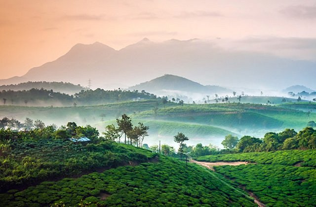
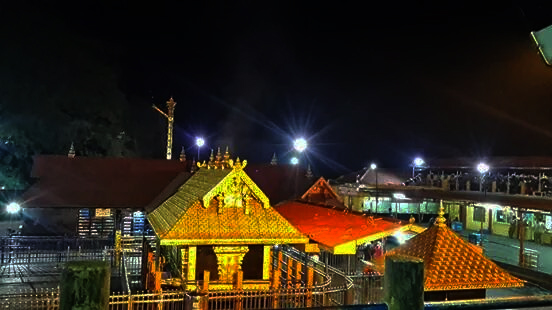

Alleppey
Officially called Alappuzha, Alleppey is known for its network of canals and lagoons with beautiful backwaters and the houseboats offering overnight stays. Located in the southern part of Kerala, the coastline of Alleppey offers some of the best beaches with water sports during the dry season. Coupled with other beautiful places in Kerala like Munnar and Thekkady, Alleppey is often considered for a honeymoon or for a great family vacation.
Alleppey's palm-fringed inter-connect network of canal backwaters attracts a lot of tourists from all over the world. Kuttanad, also called the 'Rice Bowl of Kerala' covers a large part of Allapuzha and is home to lush green paddy fields, lakes and backwaters.
Munnar
Famous for the tea estates, greenery, winding roads, blanket of mist, and viewpoints, Munnar is a hill station in Kerala, located in the Idukki district. Lying in the Western Ghats at 1600 metres, it is one of the most sought after and visited travel destinations globally, especially popular amongst honeymooners.
Once the summer resort of the erstwhile British government, the main reason to visit Munnar is to explore the sprawling tea plantations and the exotic flora and fauna. The Eravikulam National Park, Salim Ali Bird Sanctuary and tea plantations are its major attractions. Munnar is also famous for being home to the rare Neelakurinji flowers that bloom once in 12 years (the next bloom is in 2030) and the endangered Nilgiri Tahr.
Kochi
Lying on the Malabar coast in the southwest of India, Kochi or Cochin is a port city with a trading history that dates back to at least 600 years. Known popularly as the Queen of the Arabian Sea, the city is also Kerala's financial, commercial, and industrial capital. Exuding an old-world charm with diverse linguistics, such as the Jews, Konkinis, Gujaratis, and ethnic communities like the anglo-indians, Kochi has an indiscriminate mix of backwaters, beaches, islands, coasts, and plain terrains.
Cochin is also home to a group of lagoons and islands interconnected by ferries. In fact, Willingdon Island in Kochi is one of the largest human-made islands in India. Officially home to the southern command of the Indian Navy, Kochi has an active naval base and an air squadron of the Indian Navy.
Wayanad
Nestled in the Western Ghats of Kerala, Wayanad in Kerala is famous for its spice plantations and wildlife. Situated at an altitude ranging from 700 to 2100 meters above sea level, this picturesque region is blessed with verdant forests, mist-covered hills, and glistening waterfalls, making it a haven for nature lovers and adventure enthusiasts alike. With its name derived from 'Vayal Nadu,' meaning 'Land of Paddy Fields,' Wayanad boasts fertile valleys and terraced fields that contribute to its thriving agricultural economy.
Wayanad is a perfect weekend idea from the cities of South India. If taking a road trip from Bangalore, you will drive through three national parks: Nagarhole, Bandipur and Mudumalai. The best time to visit Wayanad is during the winter months from October to March, when the weather is pleasant for outdoor activities and sightseeing.

Kumarakom
With emerald green waters flanked by lush vegetation, Kumarakom is an enchanting backwater destination situated 16km away from Kottayam in Kerala. Lying on the banks of Vembanad Lake, Kerala's largest lake, Kumarakom is a cluster of small human-made islands reclaimed from the lake. This picturesque village beckons travelers with its serene waterways, verdant landscapes, and rich biodiversity, making it a quintessential destination for those seeking a peaceful retreat.
Varkala
Varkala is a coastal town in the southern part of Kerala known for the unique 15m high 'Northern Cliff' adjacent to the Arabian Sea. Located approximately 50 kilometers north of Thiruvananthapuram (Trivandrum), the capital city of Kerala, Varkala offers a perfect blend of natural beauty, spirituality, and cultural charm. It is popular for its hippie culture, shacks on the cliff serving great seafood and playing global music and the samadhi of Kerala's saint Sree Narayana Guru. Varkala is also known for Janardana Swami Temple, also known as Dakshin Kashi.
In addition to wellness activities, Varkala offers a variety of recreational pursuits for travelers to enjoy. Popular water activities include paragliding and swimming at Varkala Beach, where golden sands meet turquoise waters, creating a picturesque setting for beachgoers. Adventurous souls can also explore the nearby backwaters, take surfing lessons, or embark on boat rides along the tranquil waterways.

Sabarimala
More than 30 million pilgrims visit the temple in Sabarimala annually, making it the largest in India and second largest in the world, after Hajj Pilgrimage of Mecca in Saudi Arabia. Located inside the Periyar Tiger Reserve, in the Pathanamthitta district of Kerala, Sabarimala is a temple town on the bank of the River Pampa.
The temple is situated amidst eighteen hills and dense forest surrounding the temple, which is known as Poongavanam. People trek up the mountains from Plapalli, proceeding to Aangaamuzhi, and then to Muzhiyaar and finally to Sabarigiri road. The temple is open on the first five days of each Malayalam month with it being most crowded during Mandalapooja, Makaravilakku or Makar Sankranti.